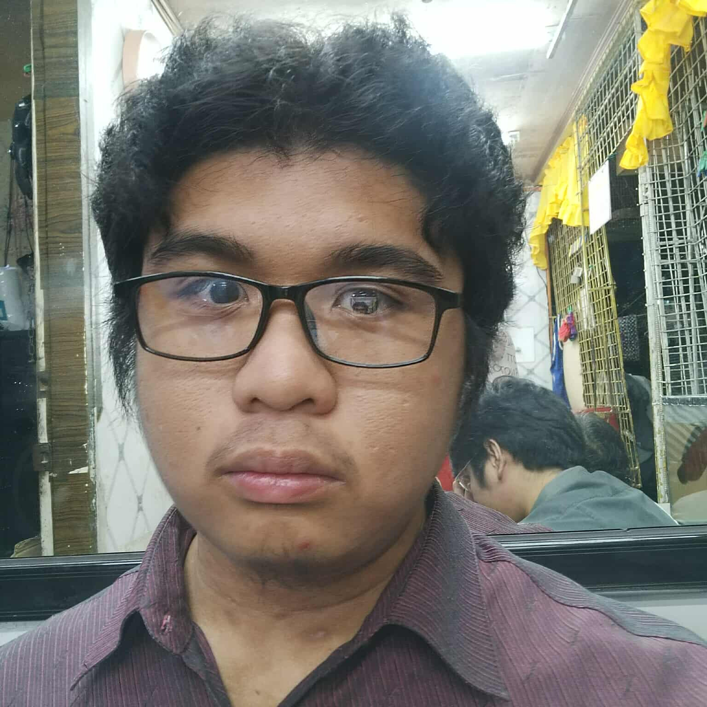

.png)
About Pawfect Match
Hello! We are the Paws Animal Adoption and Welfare team, dedicated to connecting loving homes with pets in need. Our mission is to create a community where every animal has a chance to find a forever home.
This project is part of our journey to making a positive impact through technology and compassion — where we get to apply both logical problem-solving and creative design.
When we're not working on this project, we're exploring ways to improve animal welfare and create more meaningful digital experiences. Thanks for dropping by!
History
Pawfect Match began with a simple dream. To create a world where every dog has the chance to be loved, cared for, and cherished in a forever home. Founded in the year 2023, our journey started with a small group of passionate animal lovers and web developers of Lyceum of the Philippine University Cavite who saw the need for a safe, welcoming space where families could connect with dogs in need. What began as a handful of rescues quickly grew into a community-driven mission, fueled by compassion and the belief that adoption changes lives.
Over the years, Pawfect Match has expanded its reach, rescuing dogs from shelters, streets, and difficult circumstances, and giving them the medical care, training, and affection they deserve. With each successful adoption, we’ve witnessed the joy of wagging tails and smiling families, proving that the right match can transform both human and animal lives.
Today, Pawfect Match stands as more than just an adoption service, it is a movement of kindness, second chances, and hope. Our history is written in every happy bark, every cuddle, and every family that has opened its heart to a new best friend. And as we look to the future, we remain committed to building a world where no dog is left behind, and every adoption is truly a pawfect match.
Our Mission
We believe that every dog deserves a loving home and every person deserves the joy of a loyal companion. Our mission is simple, to connect adoptable dogs with families who will cherish them for a lifetime. We are more than just an adoption service, we are a community built on compassion, second chances, and the unbreakable bond between humans and their furry friends.
Our Vision
We dream of a world where every animal is cherished and cared for in a loving home, a place where our fur babies are met with kindness, respect, and compassion. It is a vision of communities united by empathy, where no dog or cat is left behind, and where they are given the chance to thrive. In this world, adoption is celebrated as an act of love, families are enriched by the joy of companionship, and animals are never seen as disposable, but as treasured members of the household. Together, we can build this future, one pawfect match at a time.
Creators of Pawfect Match
This project was created by: Squadron Group
Clark David Darang - Frontend Developer

Julius Miguel Ditan - Frontend Developer
Alan Domingo - Frontend Developer
Allen Karl Sisnorio - Frontend Developer